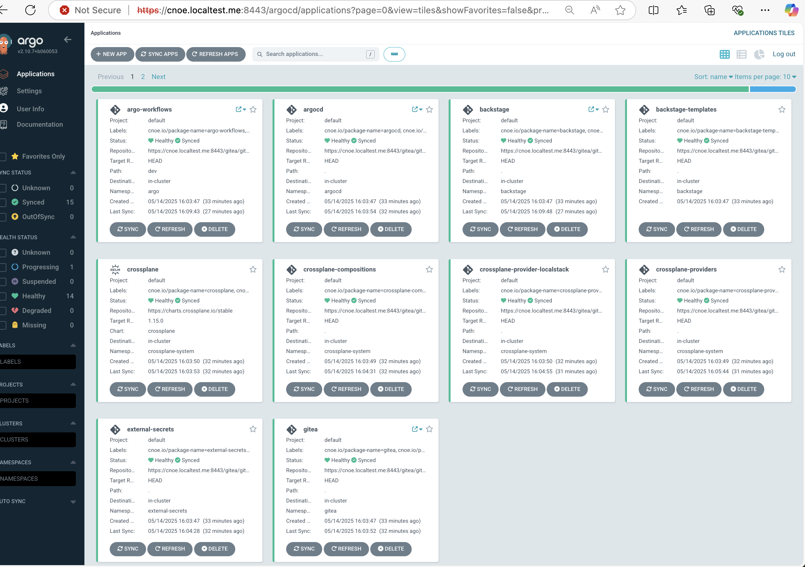
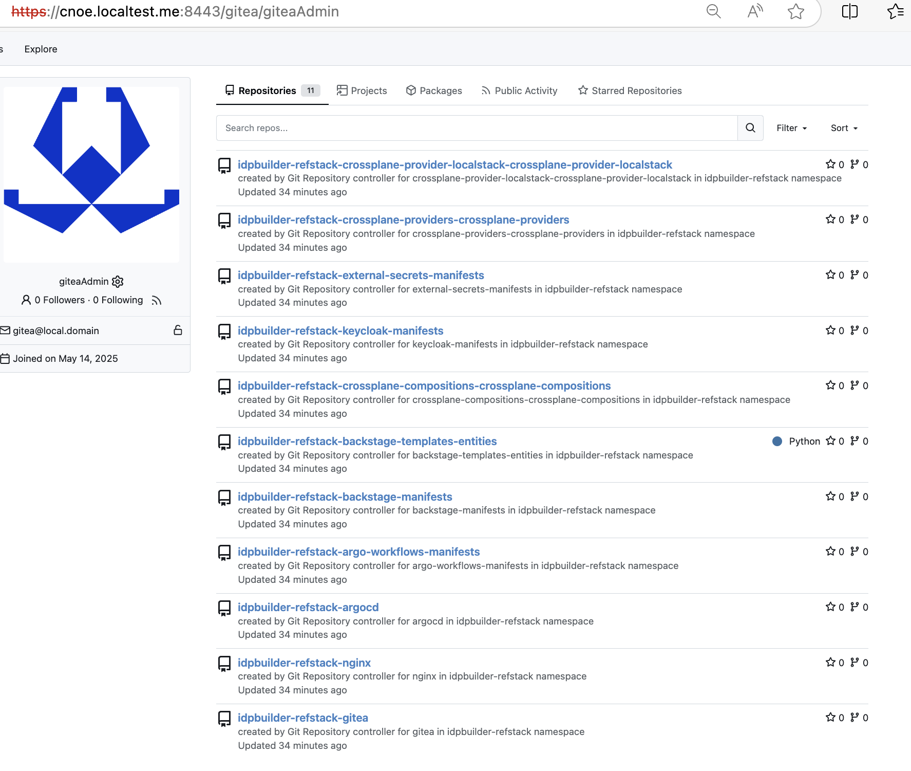
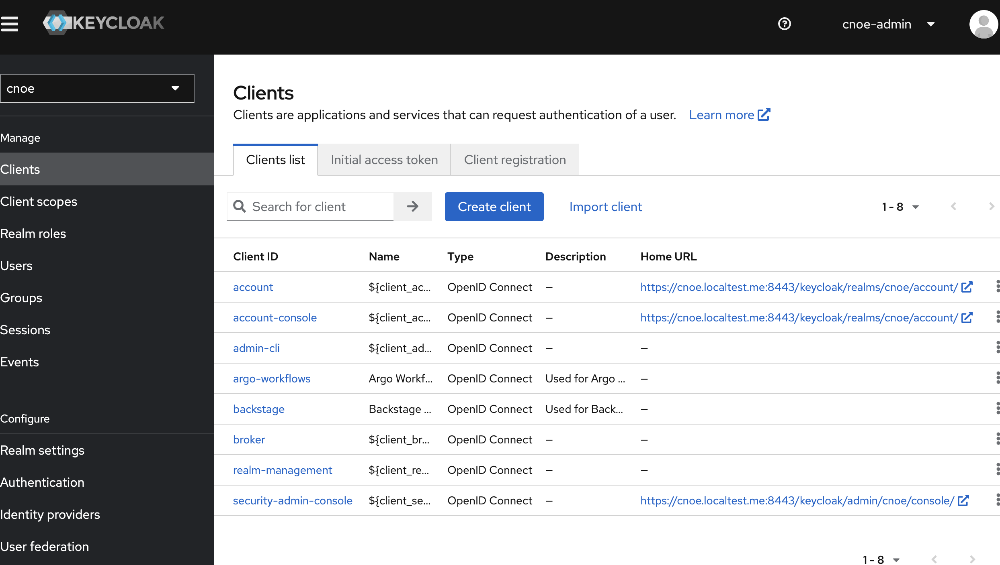
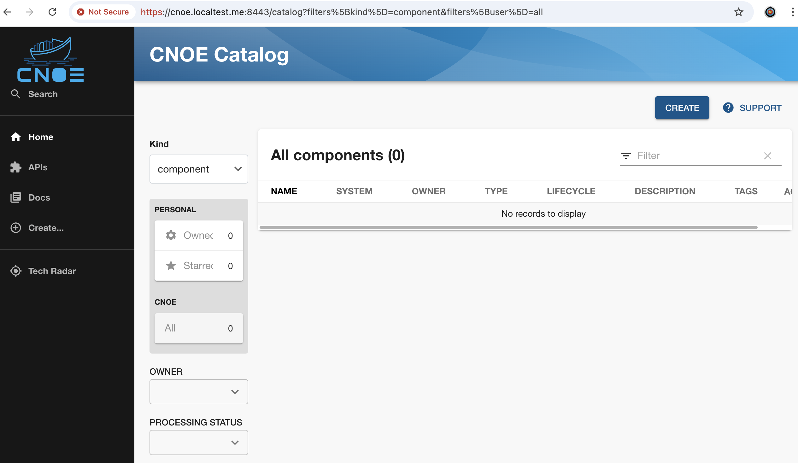

Provisioning of CNOE IDP on a local Kind k8s cluster
The CNOE IPD platform provides configurable stacks that could be used for various use cases.
These example will use CNOE IPD with the following reference implementations:
- [Reference Implementation][defref], that deploys the following components
- Argo Workflows to enable workflow orchestrations.
- Backstage as the UI for software catalog and templating. Source is available here.
- External Secrets to generate secrets and coordinate secrets between applications.
- Keycloak as the identity provider for applications.
- Spark Operator to demonstrate an example Spark workload through Backstage.
- [CrossPlain][defcp] integration for Backstage.
- [Local Stack][deflocal] for testing cloud integrations.
References:
- Reference Implementation It contains useful info on accessing and signing-in with individual services.
- Crossplane integration This integration targets Backstage.
Provisioning steps
Backstage deployment requires lots of CPU and Memory resources. Ensure the local Docker host is using configured to provide at least 6 CPU cores and 6 GB of RAM.
The deployment of the stack was successfully test on a MacOS with colima using these settings
colima start --cpu 6 --memory 6
Check colima's GitHub page for more information
Provision CNOE IDP cluster. This might take several minutes depending on the available bandwidth and CPU/Memory resources availability.
> idpbuilder create --use-path-routing \
--name refstack \
--package https://github.com/cnoe-io/stacks//ref-implementation \
--package https://github.com/cnoe-io/stacks//crossplane-integrations \
--package https://github.com/cnoe-io/stacks//localstack-integration
# check the cluster availability
> kind get clusters
refstack
Access CNOE services
If successful you should be able to access the following services
ArgoCD
URL: https://cnoe.localtest.me:8443/argocd
Run idpbuilder get secrets to get user name and password.

Gitea
The internal Git repo used primarily for demos.
URL: https://cnoe.localtest.me:8443/gitea
Run idpbuilder get secrets to get user name and password.

KeyCloak
Keycloak is an open-source Identity and Access Management (IAM) solution developed by Red Hat.
URL: https://cnoe.localtest.me:8443/keycloak/admin/master/console/
user: cnoe-admin
password: Run idpbuilder get secrets to get the value of KEYCLOAK_ADMIN_PASSWORD
select the cnoe realm once successful log-in to manage identities.

Backstage
Backstage is an open source framework for building developer portals. Powered by a centralized software catalog, Backstage restores order to your microservices and infrastructure and enables your product teams to ship high-quality code quickly — without compromising autonomy.
Backstage unifies all your infrastructure tooling, services, and documentation to create a streamlined development environment from end to end.
URL: https://cnoe.localtest.me:8443/home
There are two users set up in this configuration, and their password can be retrieved with the following command:
idpbuilder get secrets
Use the username user1 and the password value given by USER_PASSWORD field to login to the backstage instance. user1 is an admin user who has access to everything in the cluster, while user2 is a regular user with limited access. Both users use the same password retrieved above.
Both users are managed by KeyCloak under the cnoe realm.
